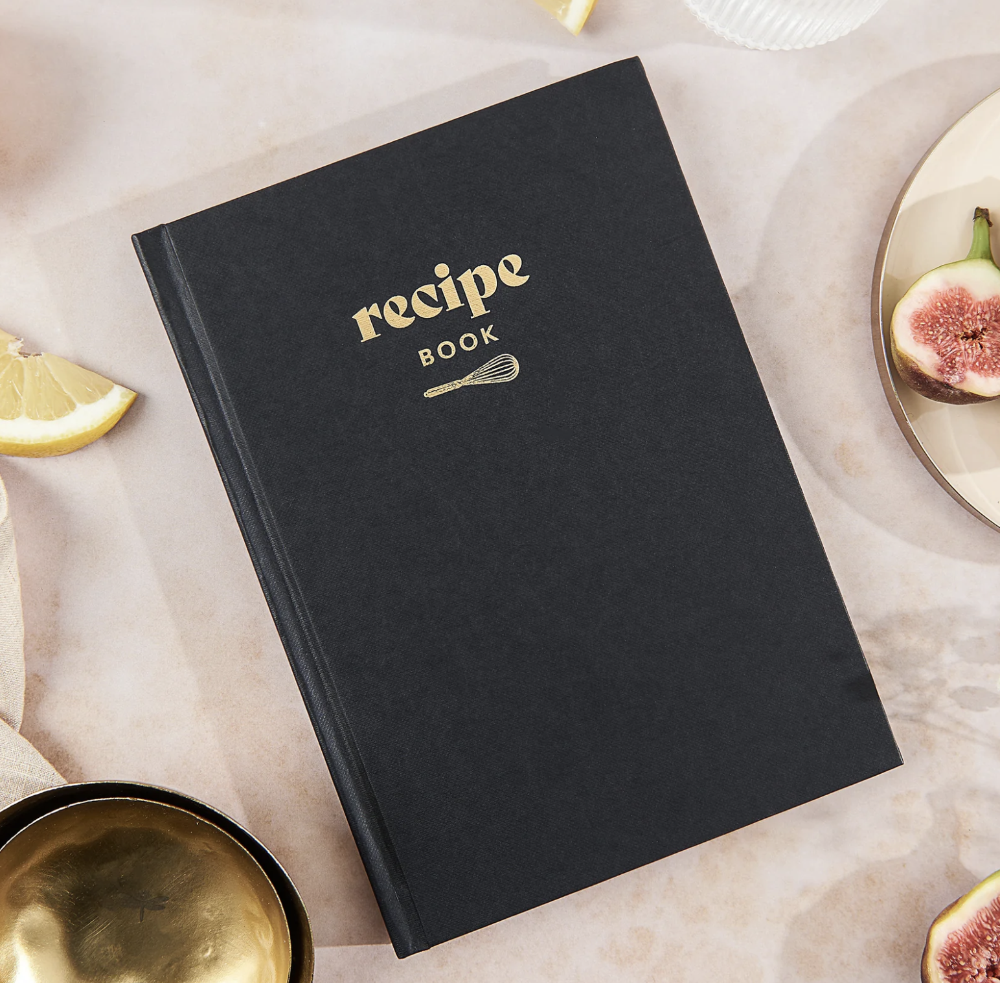
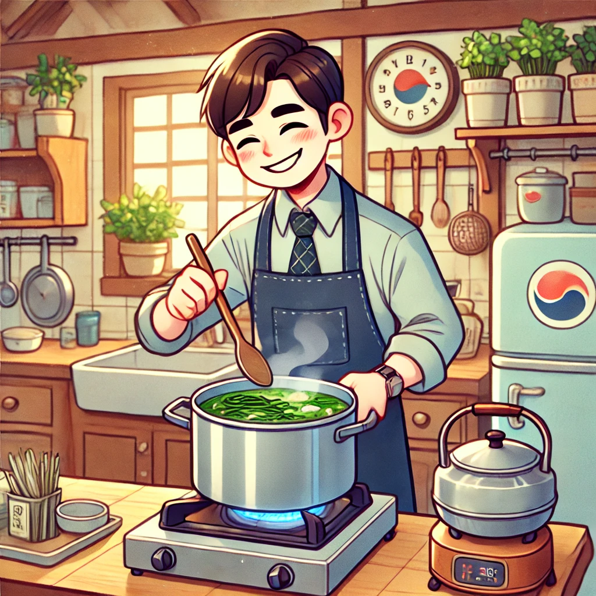

할머니 생신 기념, 16명 가족의 베트남 푸꾸옥 여행 계획
설아네 가족은 돌아오는 11월에 할머니의 70번째 생일을 기념하여 16명의 가족이 단체 여행을 하기로 했습니다. 할머니, 할아버지, 큰아빠네 가족 5명, 큰고모네 가족 4명, 우리 가족 3명, 고모 할머니네 가족 2명을 포함하여 16명의 가족이 푸꾸옥을 가기로 한 만큼 안전에 유의하여 즐겁게 여행을 다녀올 예정이라고 알렸습니다.
설아 타임즈 오설아 기자

설아네 가족은 돌아오는 11월에 할머니의 70번째 생일을 기념하여 16명의 가족이 단체 여행을 하기로 했습니다. 할머니, 할아버지, 큰아빠네 가족 5명, 큰고모네 가족 4명, 우리 가족 3명, 고모 할머니네 가족 2명을 포함하여 16명의 가족이 푸꾸옥을 가기로 한 만큼 안전에 유의하여 즐겁게 여행을 다녀올 예정이라고 알렸습니다.
설아 타임즈 오설아 기자
설아가 가장 좋아하는 음식 중 할머니께서 만들어주시는 요리는 항상 Top3를 차지한다. 할머니 집에는 강아지 이꽃님도 있어 더욱 특별하다. 여느 때처럼 할머니 댁에서 쉬고 있던 설아는 주방에서 나는 고소한 냄새에 이끌려 들어갔다. 할머니는 평소처럼 요리를 하고 계셨지만, 주방 풍경은 평소와 조금 달랐다. 주방에 평소에 보지 못했던 노트가 있었다. 정확히 말하면 할머니께서 쓰신 노트였다. 미역국, LA갈비 등 요리법을 기록하고 계셨던 것이다. 이로써 할머니의 맛있는 요리 비결이 이 소중한 노트에 있었다는 것을 알게 되었다.
설아 타임즈 오설아 기자
최근 아빠는 요리에 대한 관심이 높아지셨다. 미역국, 파스타 등 요리를 선보이고 계신다. 그중에서도 꼭 알고싶었던 아빠표 미역국 레시피를 소개한다.
직접 인터뷰한 결과, 맛있는 미역국의 레시피는 다음과 같다.
설아 타임즈 오설아 기자

이번 여름방학, 우리 가족에게 특별한 일이 있었습니다. 초등학교 3학년인 우리 딸 설아가 생애 처음으로 안경을 쓰게 된 것입니다.
개학을 앞두고 우리는 안과를 찾아 설아의 시력을 검사했습니다. 의사 선생님은 올 초 검진 결과와 시력이 비슷하다며, 아직 안경을 쓰지 않아도 된다고 말씀하셨습니다. 하지만 설아가 불편함을 호소했기에, 우리는 함께 안경을 쓰기로 결정했습니다.
처음에 설아는 안경 쓰기를 탐탁지 않아 했습니다. 안경을 써야 한다는 소식에 조금 시무룩해 하더군요. 그러나 안경점에서 처음 안경을 써보는 순간, 설아의 표정이 놀랍게 바뀌었습니다. "우와, 세상이 이렇게 또렷해요?" 설아가 눈을 동그랗게 뜨고 주변을 둘러보는 모습이 너무나 귀여웠습니다. 그 순간부터 설아는 안경에 대한 거부감을 완전히 잊어버렸답니다.
안경점에서 다양한 안경테를 구경하며 여러 안경을 써보던 중, 베이지톤의 동글동글한 귀여운 안경테를 발견했습니다. 그 안경을 쓴 설아의 모습이 너무나 사랑스러워 우리 가족 모두 환호성을 질렀죠!
설아의 안경 착용으로 우리 가족 모두가 안경을 쓰게 되었습니다. 설아의 첫 안경은 단순한 시력 교정 도구를 넘어, 우리 가족에게 새로운 추억과 더 끈끈한 유대감을 선사했습니다.
앞으로도 설아가 안경과 함께 세상을 더 선명하고 아름답게 바라보며 쑥쑥 자라나길 기대합니다. 우리 가족의 새로운 장(chapter)이 시작된 것 같아 가슴이 설렙니다!
설아 타임즈 이은미 기자

2024년 늦봄 설아네 가족은 서유럽 여행을 다녀왔습니다. 17박 18일간 영국의 런던, 프랑스의 파리, 스위스 중부를 다녀온 설아네 가족은 참 많은 것을 보고 배웠다고 알려왔습니다.
설아 타임즈 오설아 기자

2016년 설아 11개월 집을 이렇게 어지럽혔습니다.
지나가는 길, 맥주집에 있는 고양이가 반갑다고 하악 했습니다.

설아가 공부를 열심히 하고 있습니다.